PROJECT 01FLOW
FLOW
RAG
A retrieval-augmented generation system designed to turn scattered information into grounded, traceable answers.
LangChainRAGPythonVector DB
View repository ↗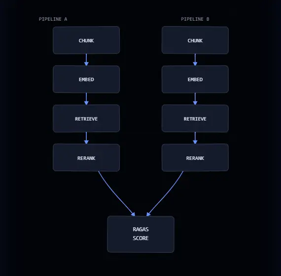
I build intelligent products that retrieve, reason and adapt—then test them against the messiness of real users.
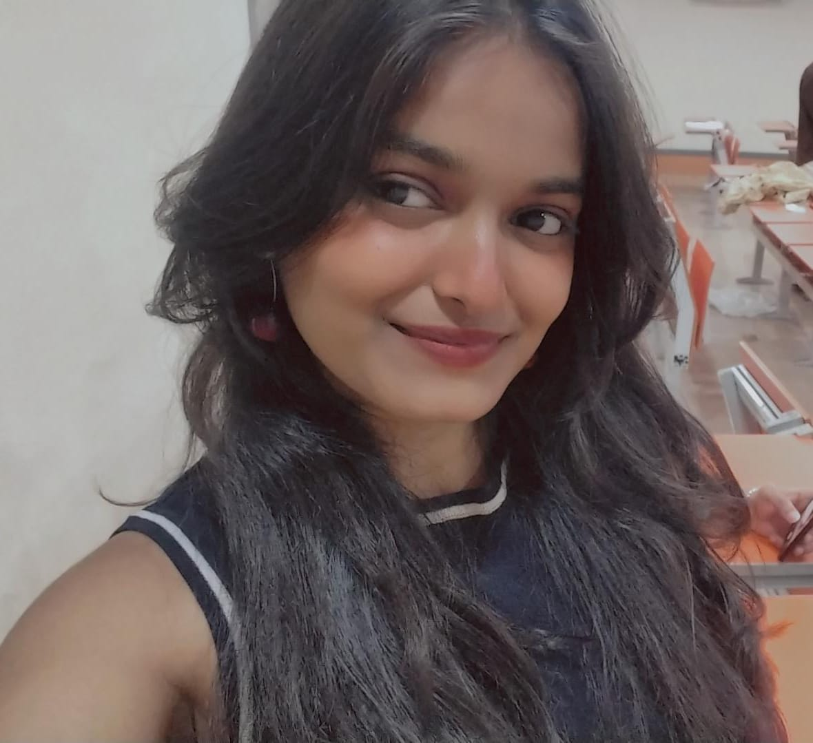
I’m primarily an AI engineer, building systems that retrieve, reason, predict and turn complex data into useful decisions. I’m also a full-stack software engineer, carrying those ideas from models and APIs to reliable interfaces people can actually use.
Before choosing a model or framework, I focus on the why behind the problem: who experiences it, what is really getting in their way and what would make the solution genuinely useful. That understanding shapes what I build—and what I leave out.
A retrieval-augmented generation system designed to turn scattered information into grounded, traceable answers.

An applied machine-learning workflow focused on making experimentation, evaluation and iteration easier to understand.
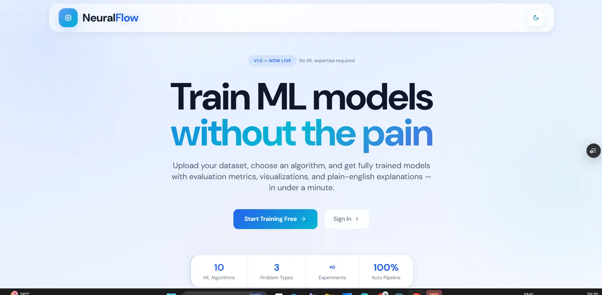
A real-time examination platform built around reliable sessions, live state and a focused candidate experience.
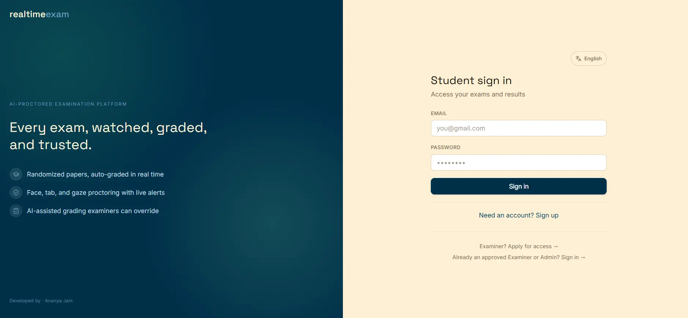
A student guidance product that organizes decisions, resources and progress into one practical system.
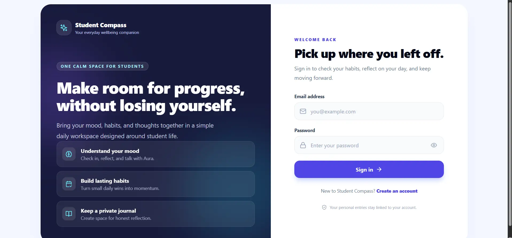
Computer vision for plant-disease detection, connecting image classification with a useful diagnosis flow.
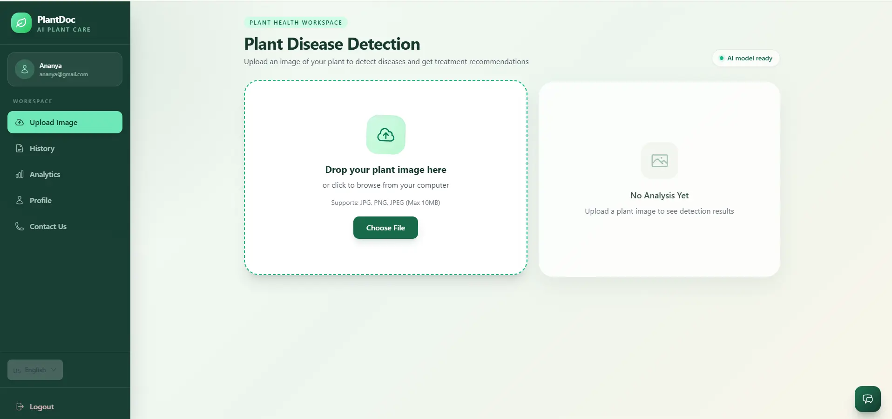
Tools arranged by the role they play—from intelligence and data to the product layer people actually use.
Consistency in algorithms, open source and structured learning—shown with the work behind the numbers.
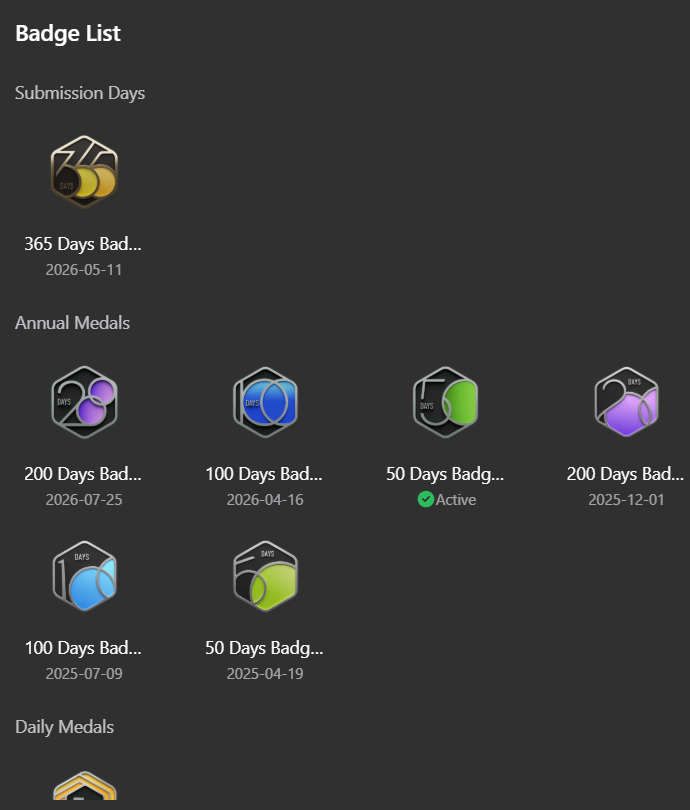
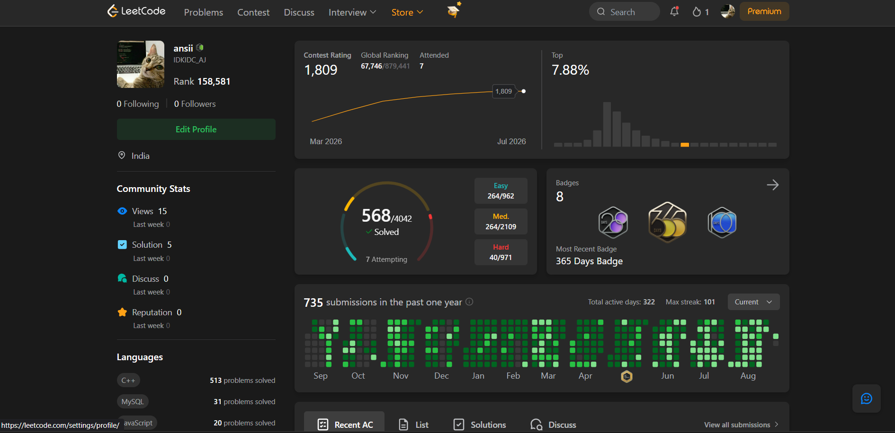
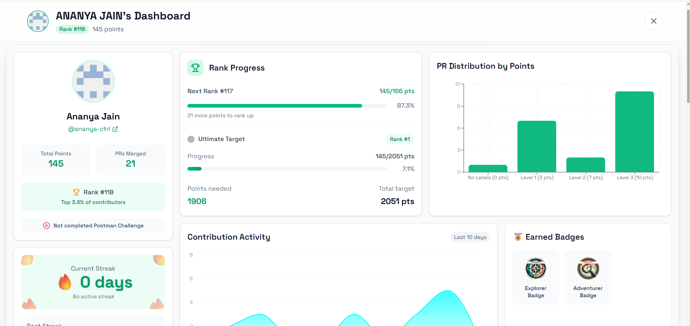
Top 2% among 30,000+ coders, with 21 pull requests merged and 145 contribution points.
NPTEL Elite certification in Mathematical Foundations of Machine Learning from IISc Bangalore, alongside national assessment performance.
Hover to pause · select to open
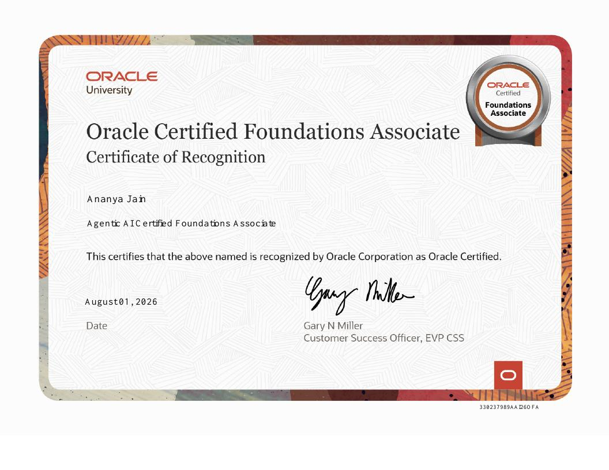
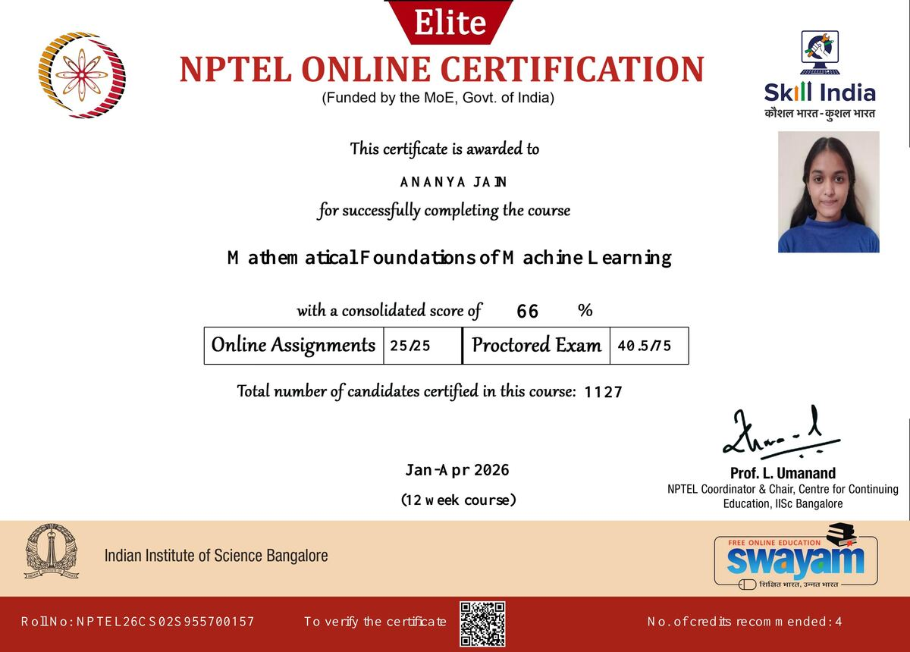
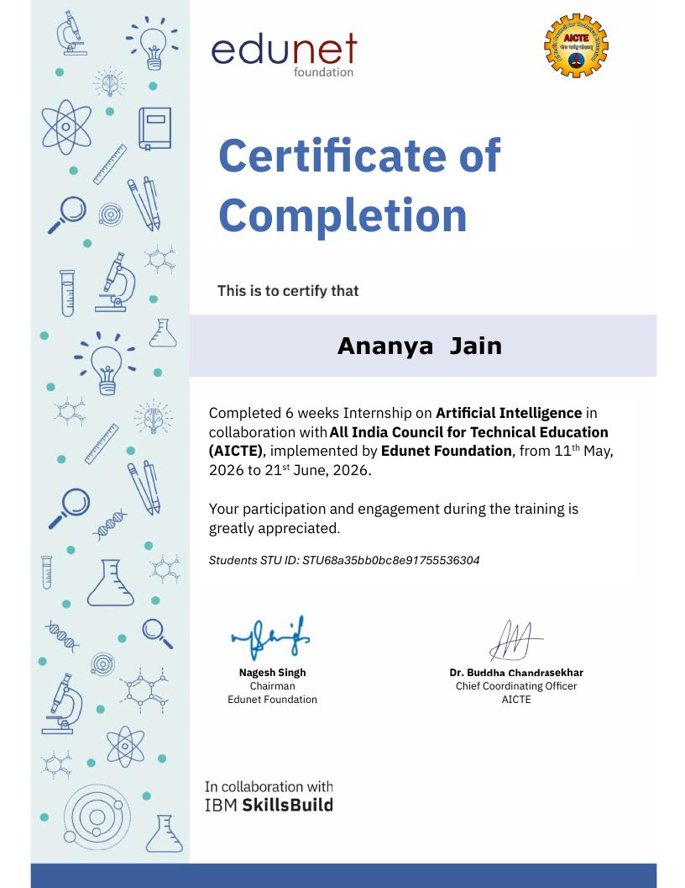
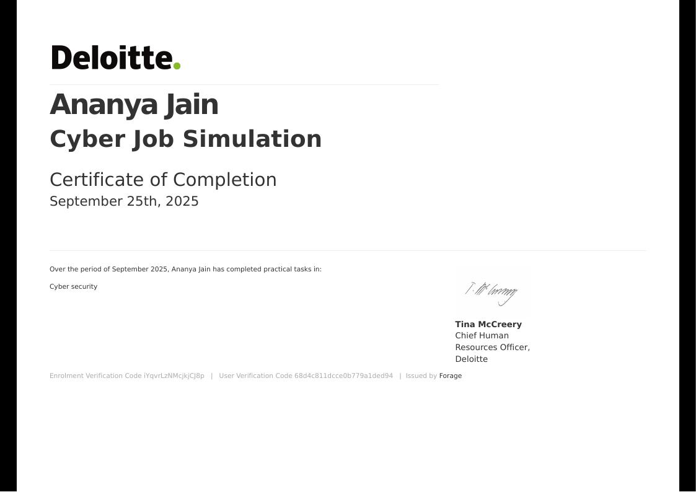
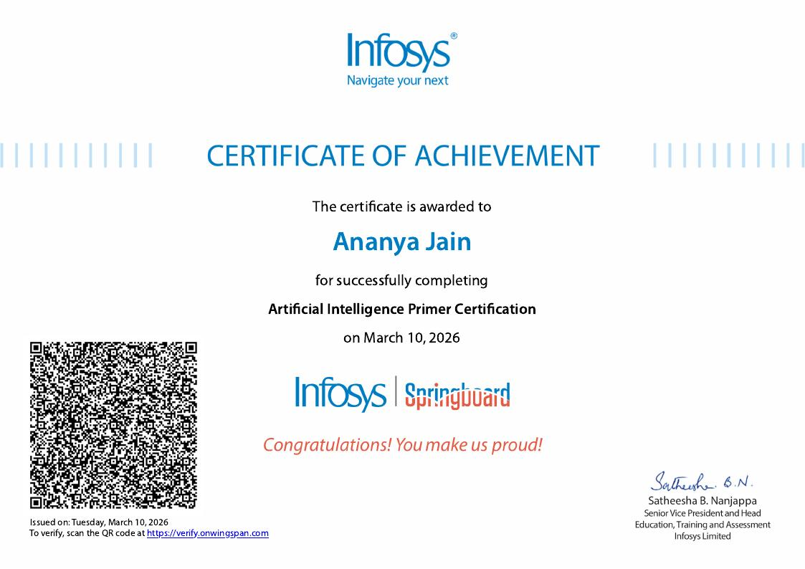
Open to AI engineering, product and open-source opportunities.
Email me ↗GitHub ↗